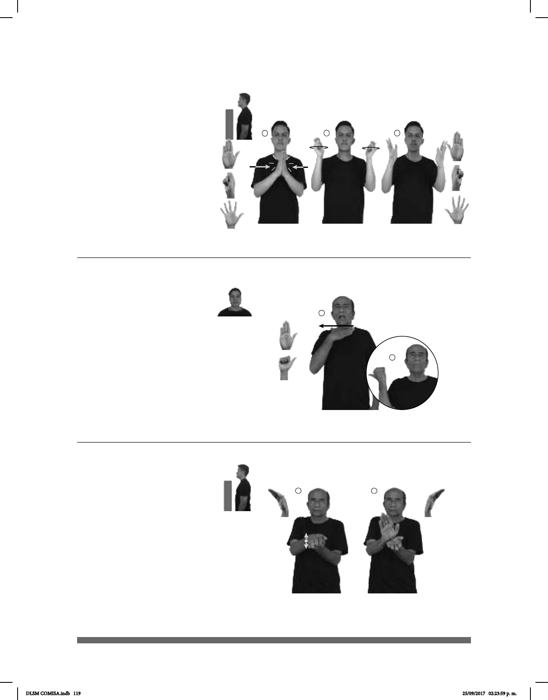

119
(B-P 25)
1
(B-P 26)
2
____¡ !_
TODOS IGLESIA GRITAR ALELUYA
Todos en la iglesia gritan ¡aleluya!
dm-JUAN MES PASADO ALEMANIA pro-ÉL YA VIAJAR
El mes pasado Juan viajó a Alemania.
Seña: SC: I. y II. SS
I. B-P.2; II. Seña que pasa de
I. Las palmas se encuentran frente
a frente; II. Palmas hacia el centro.
I. A la altura del pecho; II. A la altura
de los hombros.
I. Las manos se encuentran y se
tocan frente a frente; II. Las manos se
mueven formando círculos y después los
dedos se extienden.
interj. Demostración de
júbilo de la iglesia cristiana, especialmente
en tiempo de Pascua.
La seña se usa en la comu-
nidad sorda Amistad Cristiana e Iglesia de
Cristo.
Seña: SM
Seña que pasa de
B-P.2 a A.1
Palma hacia adentro.
A la altura del cuello, del
centro a la derecha.
Recto.
1. País ubicado en el
centro de Europa cuya capital es
Berlín. 2. Político y abogado
mexicano que se desempeñó como
presidente de México del 1 de
diciembre de 1946 al 30 de
noviembre de 1952.
Seña: SS
B-P.12
Las palmas se encuentran
frente a frente.
A la altura del pecho.
Las manos parten de un
mismo punto y luego se abren
hacia arriba y hacia abajo sin separar
las
muñecas.
Simula el abrir de una
almeja.
sust. f. Animal marino
comestible, que tiene dos conchas y
vive en aguas poco profundas.
(B-P 27)
dm-SARA MUCHA ALMEJA ADENTRO MAR pro-ELLA ENCONTRAR
Sara encontró muchas almejas en el mar.
DLSM COMISA.indb 119 25/09/2017 02:23:59 p. m.